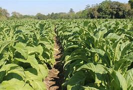

Fumo

O fumo, também conhecido como tabaco, é uma planta pertencente à família das solanáceas, sendo as espécies Nicotiana tabacum e Nicotiana rustica as mais comuns utilizadas para consumo. As folhas dessa planta são secas, curadas e processadas para uso em diversos produtos como cigarros, charutos, cachimbos e tabaco de mascar.
Épocas de plantio recomendadas variam de região, mas de forma geral os períodos recomendados são:
Região Sul: Setembro a novembro.
Região Nordeste: Maio a agosto.
Região Sudeste: Setembro a novembro.
Região Norte: Maio a agosto.
Região Centro-Oeste: Setembro a novembro.
O tempo médio entre o plantio e a colheita do fumo é de 7 a 8 meses.